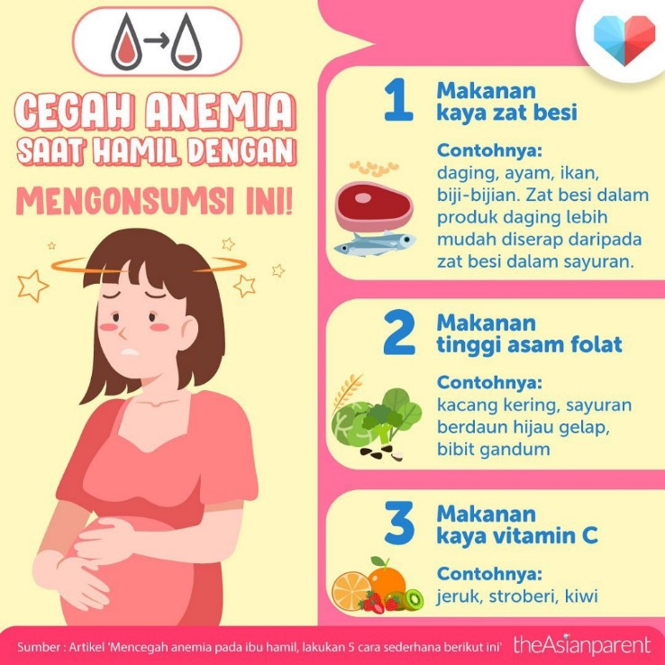
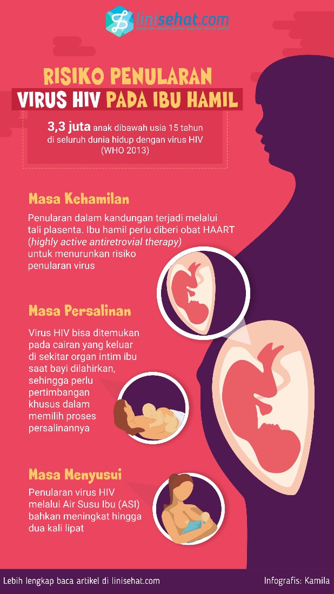
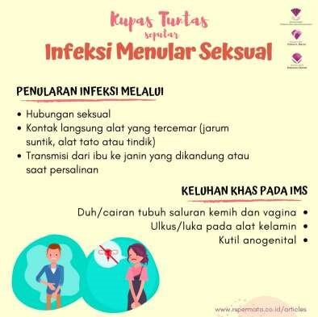
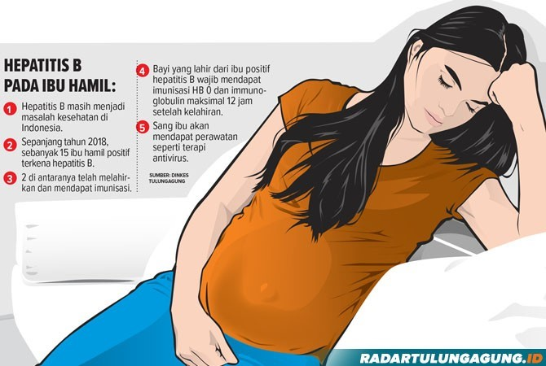
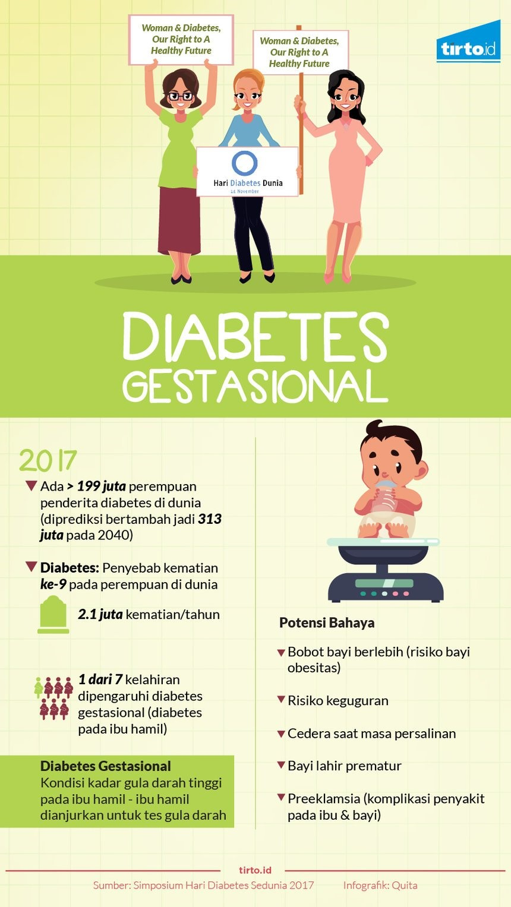

Informasi Gangguan Seksual

Pemeriksaan Kesehatan
Pemeriksaan fisik, pemeriksaan penunjang (jika diperlukan), pemeriksaan status gizi, skrining dan imunisasi tetanus, KIE/konseliing, serta pengobatan/terapi dan rujukan sesuai indikasi.
Kondisi penyakit yang harus di wasapadai
- Anemia dan Kekurangan Gizi
- HIV AIDS
- Infeksi Menular Seksual (IMS)
- Hepatitis B
- Diabetes Melitus (DM)/Kencing Manis
- Malaria
- Penyakit Genetik
- Kurangnya konsumsi makanan bergizi seimbang dapat mengakibatkan Anemia (kadar hemoglobin/Hb <12 mg/dl) dan kurangnya gizi. Kondisi ini dapat mengakibatkan perdarahan, keguguran, BBLR, kelainan bawaan pada janin, dan stunting.

- Virus HIV dapat menular melalui darah dan cairan tubuh, seperti cairna sperma, cairan vagina, dan air susu ibu (ASI). Pasangan dengan HIV dapat memiliki bayi yang sehat dengan mengikuti program Pencegahan Penularan HIV dari Ibu ke Anak (PPIA).

- Ditularkan melalui hubungan seksual, IMS dapat menyebabkan gangguan kesuburan, keguguran, dan kecacatan pada bayi.

- Penyakit yang menyerang organ hati dan disebabkan oleh virus Hepatitis B, yang ditularkan melalui darah dan cairan tubuh. Ibu hamil yang terinfeksi Hepatitis B berisiko menularkan kepada bayi yang dikandungnya.

- Penyakit yang ditandai dengan peningkatan kadar gula dalam darah. Ibu hamil dengan DM berisiko mengalami hipertensi dalam kehamilan, mempunyai bayi lahir besar, bayi kuning, bayi lahir prematur dan bayi berisiko mengidap diabetes saat dewasa.

- Disebabkan oleh parasite Plasmodium melalui gigitan nyamuk Anoples betina. Malaria dalam kehamilan dapat menyebabkan Anemia, keguguran, risiko perdarahan, bayi lahir premature dan BBLR.
- Disebabkan oleh kelainan gen yang diturunkan. Jika salah satu atau kedua catin mengidap penyakit genetic (misalnya Talasemia, Hemofilia, dll), maka anak yang dilahirkan berisiko menderita penyakit tersebut.